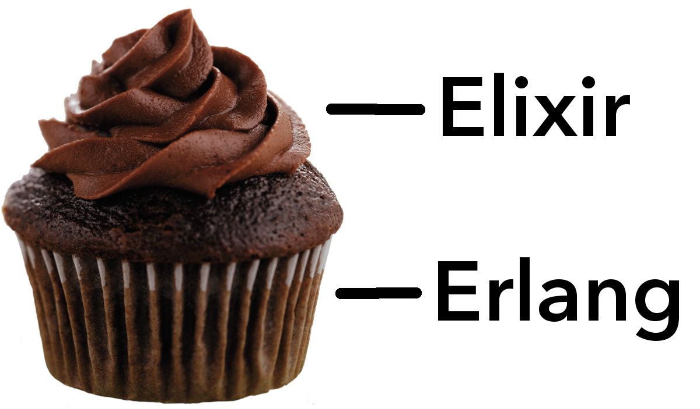

Fast, Parallel, or Reliable
Pick three
What is it?
Elixir is a functional, dynamically-typed programming language that is totally awesome.
"Functional? What am I, a scientist?"
Ruby-like syntax
# A naive version of the Sieve of Eratosthenes
defmodule Eratosthenes do
# [] is an empty list
def sieve([]) do
[]
end
# [current | rest] = [1, 2, 3, 4]
# current = 1, rest = [2, 3, 4]
def sieve([current | rest]) when current < 2 do
sieve(rest)
end
def sieve([current | rest]) do
filtered = Enum.filter(rest, fn num -> rem(num, current) != 0 end)
[current] ++ sieve(filtered)
end
end
The Sieve in action
Live demo time!
That never goes wrong, does it?The Sieve in action
Looks like the live demo went wrong, eh?
numbers = [1, 2, 3, 4, 5, 6, 7, 8, 9, 10]
1 is less than 2, so it can't be prime.
Returning sieve([2, 3, 4, 5, 6, 7, 8, 9, 10])
2 is prime. Filtered out multiples of 2.
Returning [2] ++ sieve([3, 5, 7, 9])
3 is prime. Filtered out multiples of 3.
Returning [3] ++ sieve([5, 7])
5 is prime. Filtered out multiples of 5.
Returning [5] ++ sieve([7])
7 is prime. Filtered out multiples of 7.
Returning [7] ++ sieve([])
Got an empty list.
Returning []
[2, 3, 5, 7]
Like, Ruby?

Erlang
What is it?
- A language
- A virtual machine
- Highly (and easily!) concurrent
- Reliable
I thought this was an Elixir talk?

Why Elixir
If Elixir is so similar to Erlang, why invent a new language?
Nicer syntax
Erlang Syntax
Nicer syntax
Elixir Syntax
Macro-based metaprogramming
- Most of Elixir is implemented via macros
- Great for making your own DSLs
- Elixir is homoiconic (lisp weenie alert!)
Awesome tooling
- 'mix' is a tool like Leiningen, Rake, Bundler in one
- ExUnit built-in testing framework
- Hex package manager, like RubyGems/Maven/NuGet
- IEx is Elixir's REPL
- Documentation support is baked-in. Generate module/function documentation with @moduledoc and @doc attributes, viewable in browser and in IEx.
A thoughtful standard library
Commonly-used types like Tasks, Streams, and Enumerables are built into Elixir, rather than bolted-on through other libraries.
Since Elixir's standard library was designed, rather than grown, it's very consistent.
Fast
Parallel
Erlang was built for concurrency, by running on the Erlang VM, Elixir gets concurrency (and parallelism) for free.

Trust the Process
The basic unit of concurrency in Elixir is the Process
- Not an OS Process
- Lightweight - initially consumes ~300 words of memory and grows as needed.
- Erlang VM creates one process scheduler per core, load balances processes among schedulers.
- Processes are scheduled pre-emptively, not cooperatively.
Reliable
Processes are organized by supervisors, which can automatically restart a process that has crashed.
“In the measured period, one out of 132 software faults was a Bohrbug, the remainder were Heisenbugs.”
"Why Do Computers Stop and What Can Be Done About It?" (Dr. Jim Gray, 1985)
Let it crash
(Maybe go with "Let it fail" if it's for an airplane or something)
“...rewriting C++ production code (in Erlang) resulted in four to twenty fold code reduction... it was obvious that supervisors played a significant role. The defensive programming in Erlang consisted of one per cent of the total code base versus an average of 27 per cent for the C++ applications.”
What does it all mean?
- A lot of these features aren't necessarily unique to Elixir/Erlang
- Elixir/Erlang may be only the only language/platform that has all these features built-in to the language
- Nice syntax + great tools and docs + incredible features = WHAT ARE YOU WAITING FOR?!?! GO TRY ELIXIR!!!
Thanks!
Yell at me @jordan0day on twitter.
Resources
- Elixir - http://elixir-lang.org
- Learn You Some Erlang for Great Good! (book, free online) - http://learnyousomeerlang.com
- Phoenix Web Frakework - http://phoenixframework.org